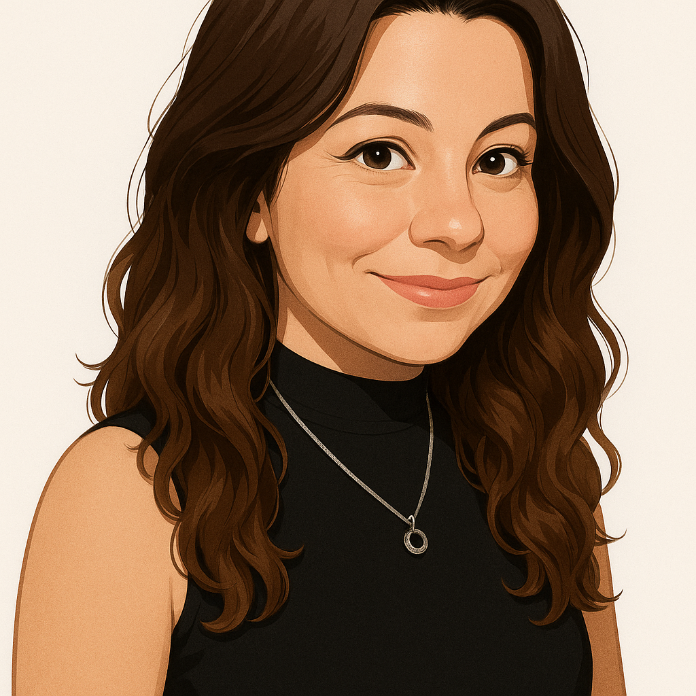

Sobre mí
Actualmente estudio la Licenciatura en Ciberdefensa en la UNDEF, cursando el primer cuatrimestre de la carrera. Paralelamente, me formé en desarrollo web a través de varios cursos, descubriendo que es el área que realmente me apasiona.
Me interesa crear sitios web accesibles, bien diseñados y funcionales. Disfruto combinar lo técnico con lo visual, y cada nuevo proyecto es una oportunidad para aprender algo nuevo.
